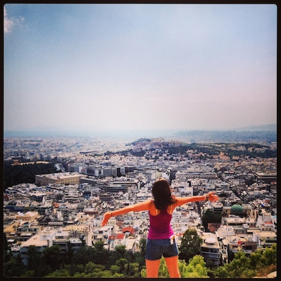
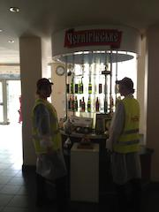

"Because I’m happy. Clap along if you feel like a room without a roof
Because I’m happy.Clap along if you feel like happiness is the truth
Because I’m happy.Clap along if you know what happiness is to you
Because I’m happy.Clap along if you feel like that’s what you wanna do"

One of the Things I'm crazy about
I love traveling! It's amazing to open the World with it's different flavors and colors. To meet new people, to make new friends! I even started writing a blog little by little about my adventures. You can check out my WordPress blog.
Some Fun Facts about Me
Used to work for a beer company. During my project on the brewery, every morning at 10 A.M. I participated in beer degustation
I am a freshly 'baked' resident of the Cayman Islands. One of the fun things that I have already tried: swam with stingrays. Aaaaammmaaazing

Inside my 'Kitchen'
I love building things, I love creating things. I love working with people and brainstorming on a new project, writing down the plan. Even when the project takes all of my time, and has the frustrating and happy moments...I feel thrilled thinking about the end result and incredibly happy when it is achieved. I love to see the result of my team's work. I feel so happy and proud to be part of the work...Feel so lucky and happy to be part of the team. And recently I thought why not try building my own e-company? And than came DBC. And than I met my wonderful cohort. Every person is unique, every person has a great idea. And I am sure I will not only get the dev skills, but find new friends and, perhaps, become a part of the next Awesome startup
© 2014 timoshka88. All Rights Reserved